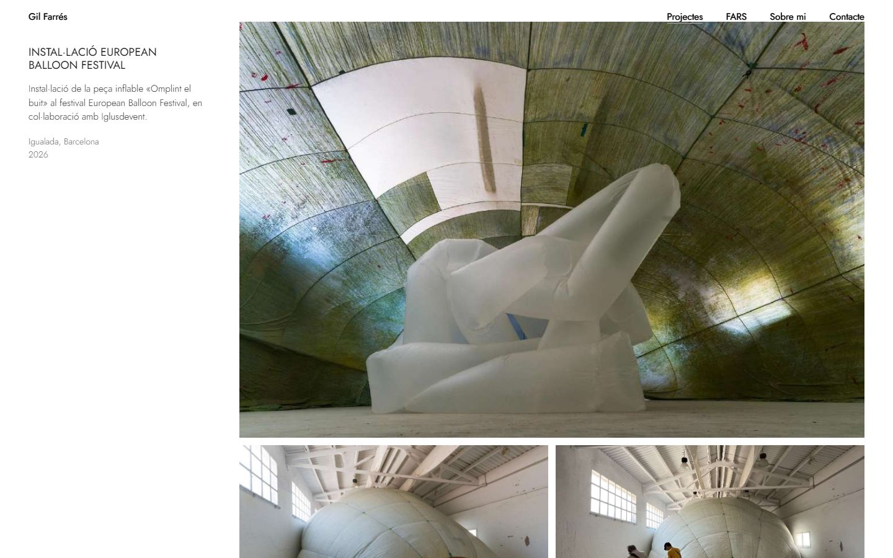
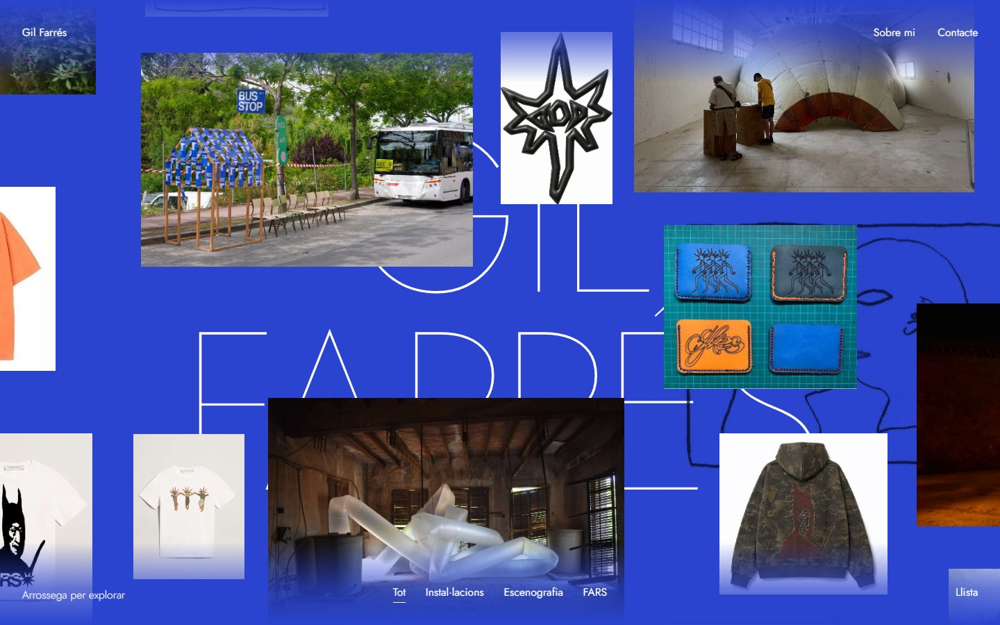
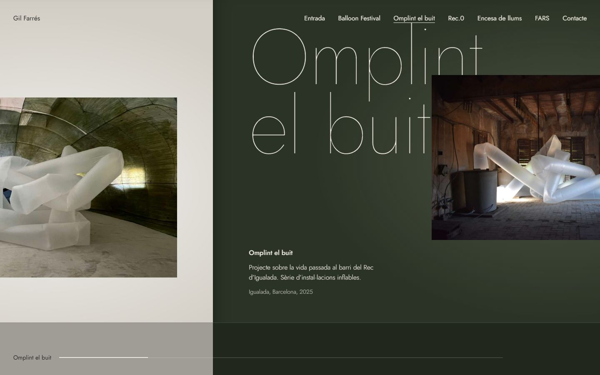

Tres
propostes

Paper
El portafoli en PDF fet pàgina web. Blanc, tipografia fina i fotos grans: cada imatge omple el buit a mesura que baixes.

Taller
Una taula de treball infinita, en el blau de les caixes de Rec.0. Arrossega en qualsevol direcció i descobreix les obres.

Sala
Un recorregut horitzontal per una exposició. Cada sala té el color del seu projecte i la lletra gran a la paret.